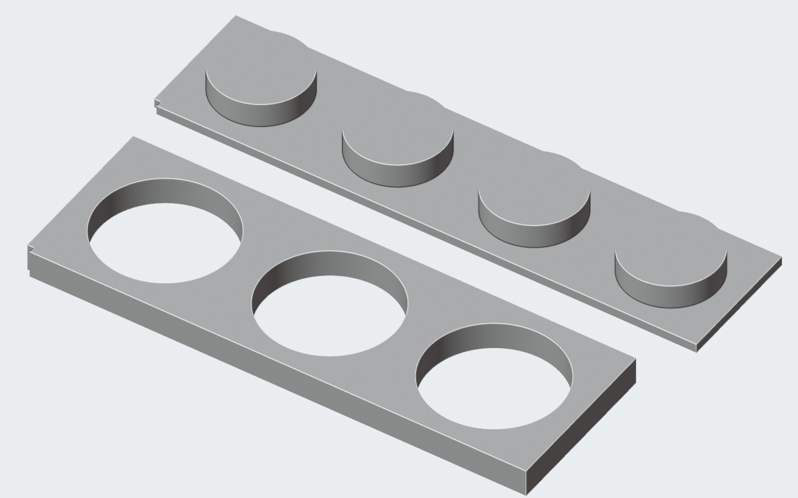
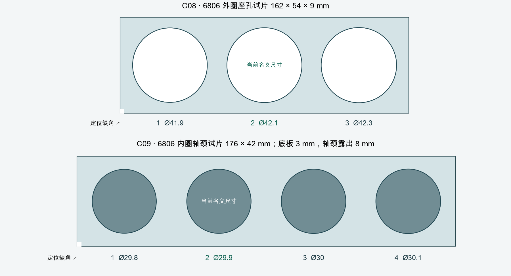

← 当前颈部结构6806 轴承的 PA12 试配片
独立于机器人总装的两片小样。对应 30 × 42 × 7 mm 轴承；不再使用旧 C04 / C05 的 32 / 20 mm 尺寸来判断当前配合。

同一生成脚本导出 STL 与预览。每片左下角的缺角用于辨认方向。
俯视尺寸索引，尺寸单位 mm；绿色标出当前模型名义值，尚未根据实物定配合。文件与记录
试配方法
与受影响的打印件采用相同 PA12 工艺，记录厂家、批次及打印方向。先测座孔两个方向、轴颈两个方向和轴承实物，再逐档试配，记录能否装入、松动和转动情况。不要以强行压入的结果认定配合合适。
座孔片只筛查外圈径向配合，轴颈片只筛查内圈径向配合；原模型的肩部、防脱间隙、螺钉锁紧和承载仍需另行验证。M3 嵌件可使用此前独立试片中的 C02，并核对当前 Ø4.05 mm 试验底孔。
这两片不是新增机器人零件，也未下单。STL 拓扑、连续实体及实际导入检查通过；实物配合、蠕变、冲击和强度均未验证。